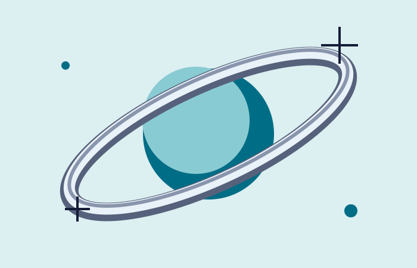

READABLE MEDIA / 资料立即可读
12 个点位，先给观察一个位置。
为每个点位保留名称、时间和方法。这里的12是虚构计划数量，不是真实环境读数。
所有章节也在下方完整目录中提供，无需等待动画。
世纪之交的媒体物件感，装载今天的清楚内容。原创虚构岸线计划，不需要任何旧插件。
12 POINTS / 3 ROUNDS / 30 MINUTES

为每个点位保留名称、时间和方法。这里的12是虚构计划数量，不是真实环境读数。
所有章节也在下方完整目录中提供，无需等待动画。
没有正在播放的声音或下载。
颜色只改变材质，内容、章节与功能保持不变。
地点和编号建立对应关系。实际项目应另填可靠来源。
保持方法一致，记录条件变化；次数本身不能证明结论。
计划时长，不是自动倒计时；未提供真实活动安排。
原创文化活动概念
非真实门票
用媒体标签组织新的传播内容。时间、地点与主办方待确认时就写“待确认”，不拿科技感掩盖信息缺失。
DATE: TBD / VENUE: TBD / CONCEPT ONLY
一件主媒体物件、少量亮面、深色正文和可立即访问的目录。
强制片头、假下载进度、无法阅读的微字和未经许可的历史品牌拼贴。